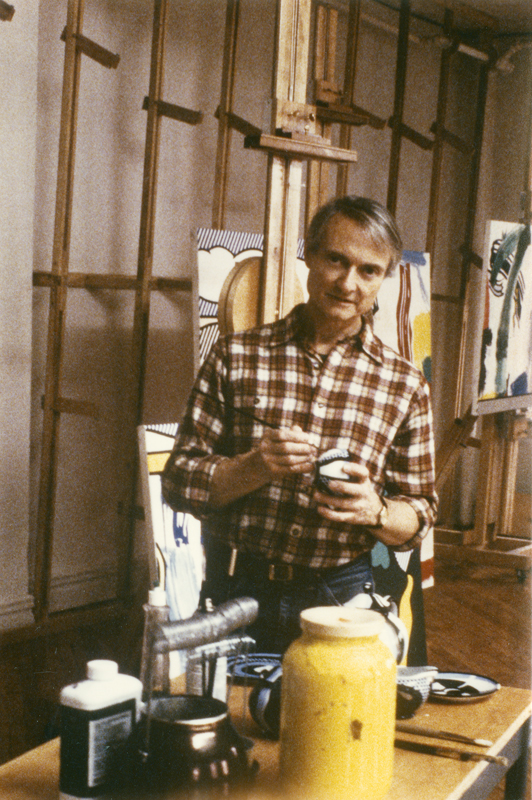
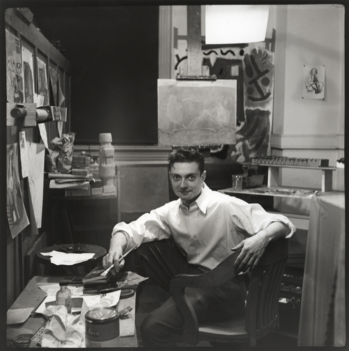
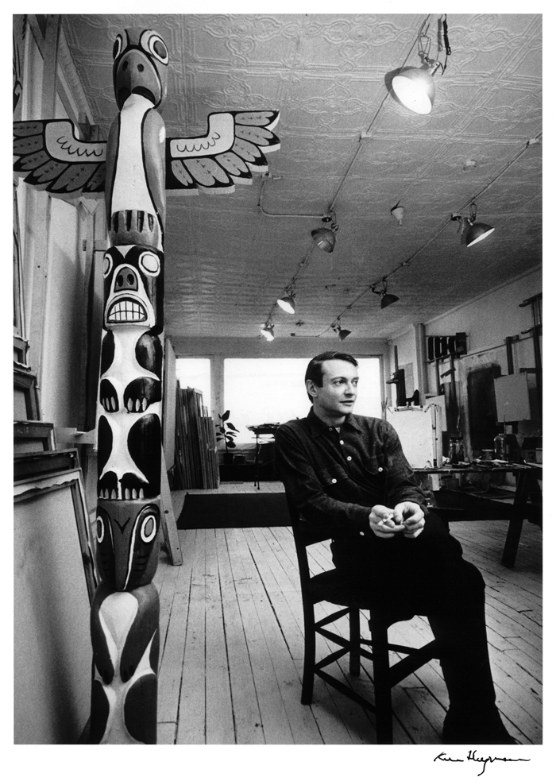

Who is Roy Lichtenstein
  
1984, Photographer Unknown. Ohio,1949,Photographer Unknown. New York,1964©Ken Heyman
Roy Lichtenstein is one of the most famous Pop Artist and leading figure in several Art Movements. He was born in Manhattan on October 27th, 1923, and died in Manhattan, 1997. He tried to earn a degree of Studio and Fine Art. However, a three-year army training interrupted it. Later, Roy Lichtenstein earned a master degree at the Ohio State University and become an instructor there.
Many of Roy Lichtenstein’s works were inspired by his interest of Comic Strips and Jazz music. For example, Whaam! And Jeff…I Love You. He was one of the most influential and innovative pop artists like Andy Warhol. In late 1940, Roy Lichtenstein he started to work on series and iconography. He was also a printmaker and expanded his art work are into sculptor 5,000 paintings, prints, drawings, sculptures, murals and other objects celebrated for their wit and invention.